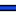
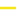
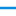
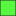

<!doctype html>
<html lang="en">
    <head>
        <meta charset="utf-8">
        <meta http-equiv="X-UA-Compatible" content="IE=edge">
        <meta name="viewport" content="initial-scale=1,user-scalable=no,maximum-scale=1,width=device-width">
        <meta name="mobile-web-app-capable" content="yes">
        <meta name="apple-mobile-web-app-capable" content="yes">
        <link rel="stylesheet" href="css/leaflet.css">
        <link rel="stylesheet" href="css/qgis2web.css"><link rel="stylesheet" href="css/fontawesome-all.min.css">
        <link rel="stylesheet" href="css/leaflet-measure.css">
        <style>
        html, body, #map {
            width: 100%;
            height: 100%;
            padding: 0;
            margin: 0;
        }
        </style>
        <title></title>
    </head>
    <body>
        <div id="map">
        </div>
        <script src="js/qgis2web_expressions.js"></script>
        <script src="js/leaflet.js"></script>
        <script src="js/multi-style-layer.js"></script>
        <script src="js/leaflet.rotatedMarker.js"></script>
        <script src="js/leaflet.pattern.js"></script>
        <script src="js/leaflet-hash.js"></script>
        <script src="js/Autolinker.min.js"></script>
        <script src="js/rbush.min.js"></script>
        <script src="js/labelgun.min.js"></script>
        <script src="js/labels.js"></script>
        <script src="js/leaflet-measure.js"></script>
        <script src="data/Superficieirrigue_1.js"></script>
        <script src="data/Superficieirrigable_2.js"></script>
        <script src="data/CanalTiBoukan_3.js"></script>
        <script src="data/RouteTiboukan_4.js"></script>
        <script src="data/ReseauHydroTiBoukan_5.js"></script>
        <script src="data/Prise_6.js"></script>
        <script src="data/Aqueduc_7.js"></script>
        <script src="data/TableauTiboukan_8.js"></script>
        <script src="data/TableauTiboukan2_9.js"></script>
        <script>
        var map = L.map('map', {
            zoomControl:true, maxZoom:28, minZoom:1
        }).fitBounds([[19.804494156859036,-72.80944168973323],[19.821069980435475,-72.78297438691465]]);
        var hash = new L.Hash(map);
        map.attributionControl.setPrefix('<a href="https://github.com/tomchadwin/qgis2web" target="_blank">qgis2web</a> &middot; <a href="https://leafletjs.com" title="A JS library for interactive maps">Leaflet</a> &middot; <a href="https://qgis.org">QGIS</a>');
        var autolinker = new Autolinker({truncate: {length: 30, location: 'smart'}});
        var measureControl = new L.Control.Measure({
            position: 'topleft',
            primaryLengthUnit: 'meters',
            secondaryLengthUnit: 'kilometers',
            primaryAreaUnit: 'sqmeters',
            secondaryAreaUnit: 'hectares'
        });
        measureControl.addTo(map);
        document.getElementsByClassName('leaflet-control-measure-toggle')[0]
        .innerHTML = '';
        document.getElementsByClassName('leaflet-control-measure-toggle')[0]
        .className += ' fas fa-ruler';
        var bounds_group = new L.featureGroup([]);
        function setBounds() {
        }
        map.createPane('pane_Satelite_0');
        map.getPane('pane_Satelite_0').style.zIndex = 400;
        var layer_Satelite_0 = L.tileLayer('https://mt1.google.com/vt/lyrs=s&x={x}&y={y}&z={z}', {
            pane: 'pane_Satelite_0',
            opacity: 1.0,
            attribution: '',
            minZoom: 1,
            maxZoom: 28,
            minNativeZoom: 0,
            maxNativeZoom: 18
        });
        layer_Satelite_0;
        map.addLayer(layer_Satelite_0);
        function pop_Superficieirrigue_1(feature, layer) {
        }

        function style_Superficieirrigue_1_0() {
            return {
                pane: 'pane_Superficieirrigue_1',
                opacity: 1,
                color: 'rgba(35,35,35,1.0)',
                dashArray: '',
                lineCap: 'butt',
                lineJoin: 'miter',
                weight: 1.0, 
                fill: true,
                fillOpacity: 1,
                fillColor: 'rgba(51,160,44,1.0)',
                interactive: true,
            }
        }
        map.createPane('pane_Superficieirrigue_1');
        map.getPane('pane_Superficieirrigue_1').style.zIndex = 401;
        map.getPane('pane_Superficieirrigue_1').style['mix-blend-mode'] = 'normal';
        var layer_Superficieirrigue_1 = new L.geoJson(json_Superficieirrigue_1, {
            attribution: '',
            interactive: true,
            dataVar: 'json_Superficieirrigue_1',
            layerName: 'layer_Superficieirrigue_1',
            pane: 'pane_Superficieirrigue_1',
            onEachFeature: pop_Superficieirrigue_1,
            style: style_Superficieirrigue_1_0,
        });
        bounds_group.addLayer(layer_Superficieirrigue_1);
        map.addLayer(layer_Superficieirrigue_1);
        function pop_Superficieirrigable_2(feature, layer) {
        }

        function style_Superficieirrigable_2_0() {
            return {
                pane: 'pane_Superficieirrigable_2',
                opacity: 1,
                color: 'rgba(35,35,35,1.0)',
                dashArray: '',
                lineCap: 'butt',
                lineJoin: 'miter',
                weight: 1.0, 
                fill: true,
                fillOpacity: 1,
                fillColor: 'rgba(89,248,64,1.0)',
                interactive: true,
            }
        }
        map.createPane('pane_Superficieirrigable_2');
        map.getPane('pane_Superficieirrigable_2').style.zIndex = 402;
        map.getPane('pane_Superficieirrigable_2').style['mix-blend-mode'] = 'normal';
        var layer_Superficieirrigable_2 = new L.geoJson(json_Superficieirrigable_2, {
            attribution: '',
            interactive: true,
            dataVar: 'json_Superficieirrigable_2',
            layerName: 'layer_Superficieirrigable_2',
            pane: 'pane_Superficieirrigable_2',
            onEachFeature: pop_Superficieirrigable_2,
            style: style_Superficieirrigable_2_0,
        });
        bounds_group.addLayer(layer_Superficieirrigable_2);
        map.addLayer(layer_Superficieirrigable_2);
        function pop_CanalTiBoukan_3(feature, layer) {
        }

        function style_CanalTiBoukan_3_0(feature) {
            switch(String(feature.properties['Type'])) {
                case 'principal':
                    return {
                pane: 'pane_CanalTiBoukan_3',
                opacity: 1,
                color: 'rgba(21,62,244,1.0)',
                dashArray: '',
                lineCap: 'square',
                lineJoin: 'bevel',
                weight: 3.0,
                fillOpacity: 0,
                interactive: true,
            }
                    break;
                case 'Secondaire':
                    return {
                pane: 'pane_CanalTiBoukan_3',
                opacity: 1,
                color: 'rgba(10,141,222,1.0)',
                dashArray: '',
                lineCap: 'square',
                lineJoin: 'bevel',
                weight: 3.0,
                fillOpacity: 0,
                interactive: true,
            }
                    break;
            }
        }
        map.createPane('pane_CanalTiBoukan_3');
        map.getPane('pane_CanalTiBoukan_3').style.zIndex = 403;
        map.getPane('pane_CanalTiBoukan_3').style['mix-blend-mode'] = 'normal';
        var layer_CanalTiBoukan_3 = new L.geoJson(json_CanalTiBoukan_3, {
            attribution: '',
            interactive: true,
            dataVar: 'json_CanalTiBoukan_3',
            layerName: 'layer_CanalTiBoukan_3',
            pane: 'pane_CanalTiBoukan_3',
            onEachFeature: pop_CanalTiBoukan_3,
            style: style_CanalTiBoukan_3_0,
        });
        bounds_group.addLayer(layer_CanalTiBoukan_3);
        map.addLayer(layer_CanalTiBoukan_3);
        function pop_RouteTiboukan_4(feature, layer) {
        }

        function style_RouteTiboukan_4_0() {
            return {
                pane: 'pane_RouteTiboukan_4',
                opacity: 1,
                color: 'rgba(245,230,23,1.0)',
                dashArray: '',
                lineCap: 'square',
                lineJoin: 'bevel',
                weight: 3.0,
                fillOpacity: 0,
                interactive: true,
            }
        }
        map.createPane('pane_RouteTiboukan_4');
        map.getPane('pane_RouteTiboukan_4').style.zIndex = 404;
        map.getPane('pane_RouteTiboukan_4').style['mix-blend-mode'] = 'normal';
        var layer_RouteTiboukan_4 = new L.geoJson(json_RouteTiboukan_4, {
            attribution: '',
            interactive: true,
            dataVar: 'json_RouteTiboukan_4',
            layerName: 'layer_RouteTiboukan_4',
            pane: 'pane_RouteTiboukan_4',
            onEachFeature: pop_RouteTiboukan_4,
            style: style_RouteTiboukan_4_0,
        });
        bounds_group.addLayer(layer_RouteTiboukan_4);
        map.addLayer(layer_RouteTiboukan_4);
        function pop_ReseauHydroTiBoukan_5(feature, layer) {
        }

        function style_ReseauHydroTiBoukan_5_0() {
            return {
                pane: 'pane_ReseauHydroTiBoukan_5',
                opacity: 1,
                color: 'rgba(0,0,0,1.0)',
                dashArray: '',
                lineCap: 'round',
                lineJoin: 'round',
                weight: 6.0,
                fillOpacity: 0,
                interactive: true,
            }
        }
        function style_ReseauHydroTiBoukan_5_1() {
            return {
                pane: 'pane_ReseauHydroTiBoukan_5',
                opacity: 1,
                color: 'rgba(17,73,255,1.0)',
                dashArray: '',
                lineCap: 'round',
                lineJoin: 'round',
                weight: 3.0,
                fillOpacity: 0,
                interactive: true,
            }
        }
        map.createPane('pane_ReseauHydroTiBoukan_5');
        map.getPane('pane_ReseauHydroTiBoukan_5').style.zIndex = 405;
        map.getPane('pane_ReseauHydroTiBoukan_5').style['mix-blend-mode'] = 'normal';
        var layer_ReseauHydroTiBoukan_5 = new L.geoJson.multiStyle(json_ReseauHydroTiBoukan_5, {
            attribution: '',
            interactive: true,
            dataVar: 'json_ReseauHydroTiBoukan_5',
            layerName: 'layer_ReseauHydroTiBoukan_5',
            pane: 'pane_ReseauHydroTiBoukan_5',
            onEachFeature: pop_ReseauHydroTiBoukan_5,
            styles: [style_ReseauHydroTiBoukan_5_0,style_ReseauHydroTiBoukan_5_1,]
        });
        bounds_group.addLayer(layer_ReseauHydroTiBoukan_5);
        map.addLayer(layer_ReseauHydroTiBoukan_5);
        function pop_Prise_6(feature, layer) {
        }

        function style_Prise_6_0() {
            return {
                pane: 'pane_Prise_6',
        rotationAngle: 0.0,
        rotationOrigin: 'center center',
        icon: L.icon({
            iconUrl: 'markers/barrier_stile.svg',
            iconSize: [30.4, 30.4]
        }),
                interactive: true,
            }
        }
        map.createPane('pane_Prise_6');
        map.getPane('pane_Prise_6').style.zIndex = 406;
        map.getPane('pane_Prise_6').style['mix-blend-mode'] = 'normal';
        var layer_Prise_6 = new L.geoJson(json_Prise_6, {
            attribution: '',
            interactive: true,
            dataVar: 'json_Prise_6',
            layerName: 'layer_Prise_6',
            pane: 'pane_Prise_6',
            onEachFeature: pop_Prise_6,
            pointToLayer: function (feature, latlng) {
                var context = {
                    feature: feature,
                    variables: {}
                };
                return L.marker(latlng, style_Prise_6_0(feature));
            },
        });
        bounds_group.addLayer(layer_Prise_6);
        map.addLayer(layer_Prise_6);
        function pop_Aqueduc_7(feature, layer) {
        }

        function style_Aqueduc_7_0() {
            return {
                pane: 'pane_Aqueduc_7',
        rotationAngle: 0.0,
        rotationOrigin: 'center center',
        icon: L.icon({
            iconUrl: 'markers/amenity=cinema.svg',
            iconSize: [22.799999999999997, 22.799999999999997]
        }),
                interactive: true,
            }
        }
        map.createPane('pane_Aqueduc_7');
        map.getPane('pane_Aqueduc_7').style.zIndex = 407;
        map.getPane('pane_Aqueduc_7').style['mix-blend-mode'] = 'normal';
        var layer_Aqueduc_7 = new L.geoJson(json_Aqueduc_7, {
            attribution: '',
            interactive: true,
            dataVar: 'json_Aqueduc_7',
            layerName: 'layer_Aqueduc_7',
            pane: 'pane_Aqueduc_7',
            onEachFeature: pop_Aqueduc_7,
            pointToLayer: function (feature, latlng) {
                var context = {
                    feature: feature,
                    variables: {}
                };
                return L.marker(latlng, style_Aqueduc_7_0(feature));
            },
        });
        bounds_group.addLayer(layer_Aqueduc_7);
        map.addLayer(layer_Aqueduc_7);
        function pop_TableauTiboukan_8(feature, layer) {
        }

        function style_TableauTiboukan_8_0() {
            return {
                pane: 'pane_TableauTiboukan_8',
                opacity: 1,
                color: 'rgba(35,35,35,1.0)',
                dashArray: '',
                lineCap: 'butt',
                lineJoin: 'miter',
                weight: 1.0, 
                fill: true,
                fillOpacity: 1,
                fillColor: 'rgba(232,113,141,1.0)',
                interactive: true,
            }
        }
        map.createPane('pane_TableauTiboukan_8');
        map.getPane('pane_TableauTiboukan_8').style.zIndex = 408;
        map.getPane('pane_TableauTiboukan_8').style['mix-blend-mode'] = 'normal';
        var layer_TableauTiboukan_8 = new L.geoJson(json_TableauTiboukan_8, {
            attribution: '',
            interactive: true,
            dataVar: 'json_TableauTiboukan_8',
            layerName: 'layer_TableauTiboukan_8',
            pane: 'pane_TableauTiboukan_8',
            onEachFeature: pop_TableauTiboukan_8,
            style: style_TableauTiboukan_8_0,
        });
        bounds_group.addLayer(layer_TableauTiboukan_8);
        map.addLayer(layer_TableauTiboukan_8);
        function pop_TableauTiboukan2_9(feature, layer) {
        }

        function style_TableauTiboukan2_9_0() {
            return {
                pane: 'pane_TableauTiboukan2_9',
                opacity: 1,
                color: 'rgba(35,35,35,1.0)',
                dashArray: '',
                lineCap: 'butt',
                lineJoin: 'miter',
                weight: 1.0, 
                fill: true,
                fillOpacity: 1,
                fillColor: 'rgba(232,113,141,1.0)',
                interactive: true,
            }
        }
        map.createPane('pane_TableauTiboukan2_9');
        map.getPane('pane_TableauTiboukan2_9').style.zIndex = 409;
        map.getPane('pane_TableauTiboukan2_9').style['mix-blend-mode'] = 'normal';
        var layer_TableauTiboukan2_9 = new L.geoJson(json_TableauTiboukan2_9, {
            attribution: '',
            interactive: true,
            dataVar: 'json_TableauTiboukan2_9',
            layerName: 'layer_TableauTiboukan2_9',
            pane: 'pane_TableauTiboukan2_9',
            onEachFeature: pop_TableauTiboukan2_9,
            style: style_TableauTiboukan2_9_0,
        });
        bounds_group.addLayer(layer_TableauTiboukan2_9);
        map.addLayer(layer_TableauTiboukan2_9);
        var baseMaps = {};
        L.control.layers(baseMaps,{' Tableau Tiboukan 2': layer_TableauTiboukan2_9,' Tableau Tiboukan': layer_TableauTiboukan_8,' Aqueduc': layer_Aqueduc_7,' Prise': layer_Prise_6,' Reseau Hydro Ti Boukan': layer_ReseauHydroTiBoukan_5,' Route Tiboukan': layer_RouteTiboukan_4,'Canal Ti Boukan<br /><table><tr><td style="text-align: center;"></td><td>principal</td></tr><tr><td style="text-align: center;"></td><td>Secondaire</td></tr></table>': layer_CanalTiBoukan_3,' Superficie irrigable': layer_Superficieirrigable_2,' Superficie irriguée': layer_Superficieirrigue_1,"Satelite": layer_Satelite_0,}).addTo(map);
        setBounds();
        var i = 0;
        layer_CanalTiBoukan_3.eachLayer(function(layer) {
            var context = {
                feature: layer.feature,
                variables: {}
            };
            layer.bindTooltip((layer.feature.properties['Nom'] !== null?String('<div style="color: #000000; font-size: 10pt; font-style: italic; font-family: \'Arial\', sans-serif;">' + layer.feature.properties['Nom']) + '</div>':''), {permanent: true, offset: [-0, -16], className: 'css_CanalTiBoukan_3'});
            labels.push(layer);
            totalMarkers += 1;
              layer.added = true;
              addLabel(layer, i);
              i++;
        });
        var i = 0;
        layer_RouteTiboukan_4.eachLayer(function(layer) {
            var context = {
                feature: layer.feature,
                variables: {}
            };
            layer.bindTooltip((layer.feature.properties['name'] !== null?String('<div style="color: #323232; font-size: 10pt; font-family: \'Arial\', sans-serif;">' + layer.feature.properties['name']) + '</div>':''), {permanent: true, offset: [-0, -16], className: 'css_RouteTiboukan_4'});
            labels.push(layer);
            totalMarkers += 1;
              layer.added = true;
              addLabel(layer, i);
              i++;
        });
        var i = 0;
        layer_ReseauHydroTiBoukan_5.eachLayer(function(layer) {
            var context = {
                feature: layer.feature,
                variables: {}
            };
            layer.bindTooltip((layer.feature.properties['nom'] !== null?String('<div style="color: #189ccc; font-size: 10pt; font-family: \'Arial\', sans-serif;">' + layer.feature.properties['nom']) + '</div>':''), {permanent: true, offset: [-0, -16], className: 'css_ReseauHydroTiBoukan_5'});
            labels.push(layer);
            totalMarkers += 1;
              layer.added = true;
              addLabel(layer, i);
              i++;
        });
        resetLabels([layer_CanalTiBoukan_3,layer_RouteTiboukan_4,layer_ReseauHydroTiBoukan_5]);
        map.on("zoomend", function(){
            resetLabels([layer_CanalTiBoukan_3,layer_RouteTiboukan_4,layer_ReseauHydroTiBoukan_5]);
        });
        map.on("layeradd", function(){
            resetLabels([layer_CanalTiBoukan_3,layer_RouteTiboukan_4,layer_ReseauHydroTiBoukan_5]);
        });
        map.on("layerremove", function(){
            resetLabels([layer_CanalTiBoukan_3,layer_RouteTiboukan_4,layer_ReseauHydroTiBoukan_5]);
        });
        </script>
    </body>
</html>
